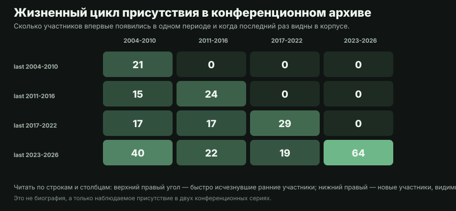
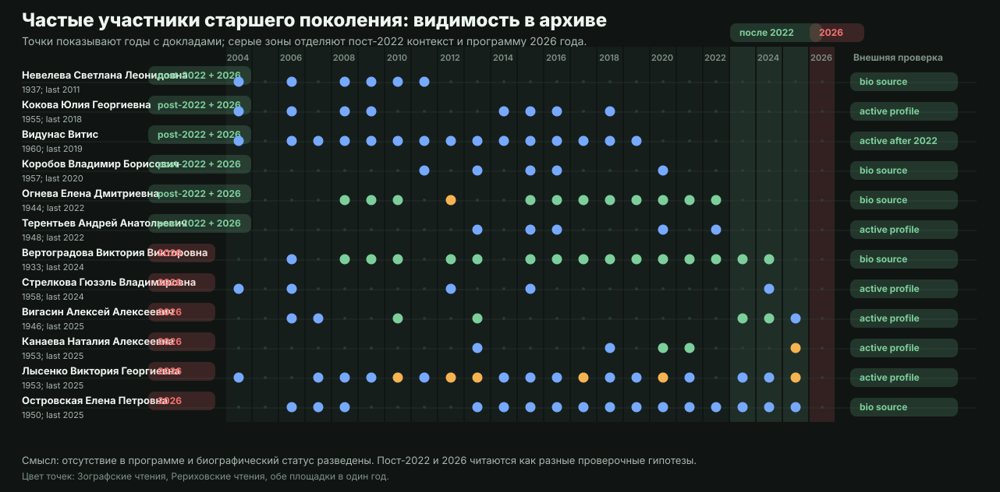
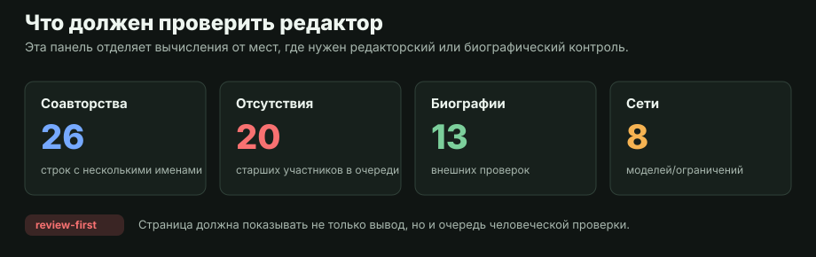

Эта страница шире, чем сюжет о гейткипинге. Она описывает поле как живую инфраструктуру: кто приходит на площадки, какие институты удерживают ядро, где возникают сетевые сообщества, как меняется поколенческий баланс и какие выводы нельзя делать без ручной проверки.
1. Институциональная экология
Российская индология держится не только на формальных центрах РАН и классических университетах. В архиве видны музейные, библиотечные, региональные, независимые и межинституциональные траектории. Это особенно важно для молодых и средних поколений: горизонтальные коллаборации часто возникают за пределами одной кафедры или лаборатории.
Зографские и Рериховские чтения фиксируют публичную витрину поля: кто приглашен, кто регулярно возвращается, какие темы получают место в программе.
Неформальные группы видны через повторные совместные темы, общие сессии, межгородские связи и внешнюю активность, но не сводятся к «колледжам» в американском смысле.
2. Поколения и смена присутствия
Для социологии науки важны не только новички, но и исчезновения из программы. Сама по себе пустота в строке календаря ничего не доказывает: это может быть смерть, болезнь, политический разрыв после 2022 года, личный выбор или программный фильтр. Поэтому ниже отсутствия разведены на две гипотезы и снабжены внешней биографической проверкой.


Частые участники старшего поколения, которых не видно после 2022 года
| Участник | Год рождения | Докладов до 2023 | Последний год | Внешняя проверка |
|---|---|---|---|---|
| Видунас Витис | 1960 | 15 | 2019 | внешняя активность после 2022 Vilnius University scholar Vytis Vidunas receives the 2023 India-Lithuania Friendship Award |
| Огнева Елена Дмитриевна | 1944 | 13 | 2022 | биографический профиль без отметки смерти Огнева Елена Дмитриевна |
| Кокова Юлия Георгиевна | 1955 | 8 | 2018 | активный/текущий профиль Кокова Юлия Георгиевна | Orientalia Rossica |
| Невелева Светлана Леонидовна | 1937 | 6 | 2011 | биографический профиль без отметки смерти Невелева Светлана Леонидовна | ИВР РАН personalia PDF |
| Коробов Владимир Борисович | 1957 | 5 | 2020 | биографический профиль без отметки смерти Коробов Владимир Борисович (востоковед) |
| Терентьев Андрей Анатольевич | 1948 | 5 | 2022 | активный/текущий профиль Терентьев Андрей Анатольевич | Dharma.ru |
Частые участники старшего поколения, отсутствующие в программе 2026 года
| Участник | Год рождения | Докладов до 2026 | Последний год | Внешняя проверка |
|---|---|---|---|---|
| Лысенко Виктория Георгиевна | 1953 | 25 | 2025 | активный/текущий профиль Лысенко Виктория Георгиевна | Институт философии РАН |
| Вертоградова Виктория Викторовна | 1933 | 17 | 2024 | биографический профиль без отметки смерти Вертоградова Виктория Викторовна | Философский факультет МГУ |
| Островская Елена Петровна | 1950 | 16 | 2025 | биографический профиль без отметки смерти Островская Елена Петровна |
| Видунас Витис | 1960 | 15 | 2019 | внешняя активность после 2022 Vilnius University scholar Vytis Vidunas receives the 2023 India-Lithuania Friendship Award |
| Огнева Елена Дмитриевна | 1944 | 13 | 2022 | биографический профиль без отметки смерти Огнева Елена Дмитриевна |
| Кокова Юлия Георгиевна | 1955 | 8 | 2018 | активный/текущий профиль Кокова Юлия Георгиевна | Orientalia Rossica |
| Вигасин Алексей Алексеевич | 1946 | 7 | 2025 | активный/текущий профиль ЭС: А.А.Вигасин | Летопись Московского университета |
| Канаева Наталия Алексеевна | 1953 | 6 | 2025 | активный/текущий профиль Канаева Наталия Алексеевна | НИУ ВШЭ |
| Невелева Светлана Леонидовна | 1937 | 6 | 2011 | биографический профиль без отметки смерти Невелева Светлана Леонидовна | ИВР РАН personalia PDF |
| Коробов Владимир Борисович | 1957 | 5 | 2020 | биографический профиль без отметки смерти Коробов Владимир Борисович (востоковед) |
| Стрелкова Гюзэль Владимировна | 1958 | 5 | 2024 | активный/текущий профиль Стрелкова Гюзэль Владимировна | ИСТИНА |
| Терентьев Андрей Анатольевич | 1948 | 5 | 2022 | активный/текущий профиль Терентьев Андрей Анатольевич | Dharma.ru |
Машиночитаемая очередь проверки собирается в senior_absence_audit.csv, а внешние биографические источники — в senior_biographical_verification.csv. Строки со статусом «нужен более сильный источник» не должны использоваться для публичных биографических утверждений без ручной проверки.
3. Сетевые посредники
Термин «брокер» в русском тексте звучит слишком экономически и иногда сбивает. Для страницы и подписей лучше использовать «сетевой посредник», «участник-связка» или «связующий участник». Тогда смысл остается тем же: это не начальник и не самый продуктивный автор, а человек, через которого разные группы оказываются соединены.
4. Гейткипинг как частный сюжет
Сюжет об исключении, программных фильтрах и поколенческом конфликте вынесен на отдельную страницу: академический гейткипинг. Так sociology.html остается обзорной рамкой, а более острый анализ не подменяет всю социологию науки.
5. Что должен проверять человек

- Списки отсутствующих участников: смерть, болезнь, смена темы, эмиграция, личный выбор и программный фильтр выглядят одинаково в голой таблице.
- Соавторство: строка с двумя именами в программе не всегда означает устойчивую научную коллаборацию.
- Аффилиации: РАН, университет, музей, библиотека и независимый статус не всегда исчерпывают реальное место работы.
- Сетевые выводы: совместная сессия, совместный доклад, тема и институция являются разными типами связи.
Редакционные решения по аудитории, именованию людей и силе утверждений вынесены в мета-документ.